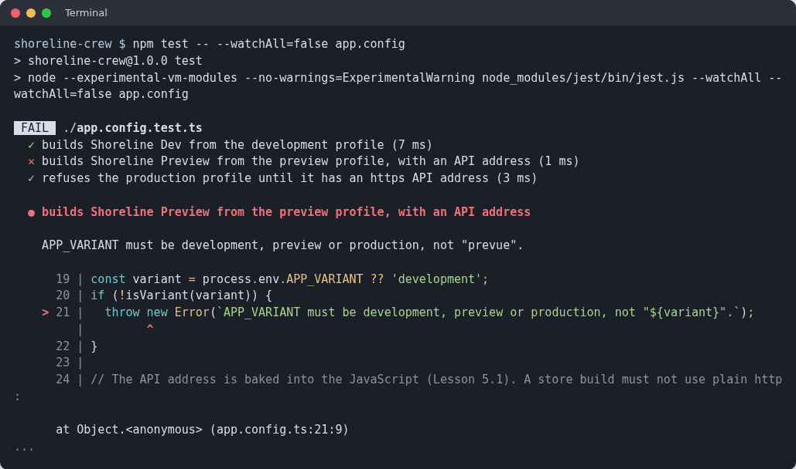

React Native & Expo · Part 3 · Session 23 of 26 · 3 hours
Session 23
Development Builds and EAS Build
Shoreline Crew stops borrowing Expo Go: an app of its own, profiles tested before a build is spent, and honest costs.
Today
Three hours, one lesson
| 0:00 | Warm-up: Lesson 9.1 |
| 0:10 | 9.2 Your own field kit; demo: the dev client and eas.json |
| 0:40 | Accounts and costs, honestly |
| 0:50 | Lab: Rockpool Survey's build profiles |
| 1:15 | Break (10 min) |
| 1:25 | What EAS sees, the build flow, installing |
| 1:40 | Project: Steps 2 to 4 (and 1, 5, 6 with an account) |
| 2:25 | Build planning: new build or just Metro? |
| 2:50 | Exit ticket, homework, bring list |
LABS Lab files are in
labs/module-23. Work in starter/, never the solution.Warm-up · Lesson 9.1
Three questions, answered alone
- What decides Shoreline Dev, Preview or Crew?
- Why
app.config.tsand notapp.json? The price? - What does the production guard refuse, and why?
WHY Each answer comes back today.
9.2
Development Builds and EAS Build
An app of your own, and an honest look at what it costs.
9.2 · Frame
When Expo Go is not enough
- Its own name, icon and ids (Expo Go runs as
host.exp.Exponent) - Its own permission sentences and notification icon
- Your Google Maps key, cleartext for the preview only
- Push from a server; a native library Expo Go does not carry
- Any SDK, for as long as you like
WHY Everything Shoreline Crew does still runs in Expo Go. From now on, test the app you ship.
9.2 · Mental model
The rental kit and your own field kit
- Expo Go: the beach hut's rental kit, the hut's label, no tools added
- Development build: your own kit, your label, exactly your tools
- The plan for the day (JavaScript) still comes by radio from Metro
- Add a tool, pack the bag again: a new build
RULE JavaScript = Metro · native = a new build
9.2 · Three kinds of build
Expo Go, development, release
| Native code | Expo's set · yours · yours |
| JavaScript | Metro · Metro · inside the app |
| Dev menu | yes · yes · no |
| Built by | Expo · you, when native code changes · you, every release |
WHY Release = preview (testers, from a link) and production (the stores).
9.2 · Live demo, part 1
Before: Expo Go
npx expo start
› Scan the QR code above to open in Expo Go. › Metro: exp://192.168.1.42:8081 › Using Expo Go › Press s │ switch to development build
WHY The QR code (left out) opens Expo Go. s would switch to a development build nobody has yet.
9.2 · Live demo, part 1
Add the development client
npx expo install expo-dev-client
env: load .env.local env: export EXPO_PUBLIC_API_URL › Installing 1 SDK 58.0.0 compatible native module using npm > npm install added 7 packages, and audited 1432 packages in 6s ...
WHY No "Cannot automatically write to dynamic config": Expo applies this plugin by itself.
9.2 · Live demo, part 1
After: a development build
npx expo start
› Scan the QR code above to open in a development build. (Learn more: https://expo.fyi/start) › Metro: exp+shoreline-crew://?__expo_url=http%3A%2F%2F192.168.1.42%3A8081 › Using development build › Press s │ switch to Expo Go
WHY A new scheme, exp+shoreline-crew. Press s for Expo Go until Shoreline Dev is installed.
9.2 · eas.json
Development: a dev client from a link
shoreline-crew/eas.json
"development": {
"developmentClient": true,
"distribution": "internal",
"environment": "development",
"env": {
"APP_VARIANT": "development"
}
},
WHY developmentClient: the launcher and the developer menu. internal: installed from a link.
9.2 · eas.json
Preview: the address goes in the profile
shoreline-crew/eas.json
"preview": {
"distribution": "internal",
"environment": "preview",
"env": {
"APP_VARIANT": "preview",
"EXPO_PUBLIC_API_URL": "http://192.168.1.42:4000"
}
},
WHY Its JavaScript is inside, and Metro is not there. Put YOUR computer's address here.
9.2 · eas.json
Production: no address, on purpose
shoreline-crew/eas.json
"production": {
"environment": "production",
"autoIncrement": true,
"env": {
"APP_VARIANT": "production"
}
}
},
"submit": {
"production": {}
}
}
WHY The 9.1 guard refuses it until there is an https server. submit is for Lesson 9.4.
9.2 · Two words
env and environment
env: this profile's variables- On your computer and on the server
- APP_VARIANT, the preview address
- Committed with eas.json
environment: a drawer on expo.dev- EAS environment variables
- The Google Maps key (sensitive)
- If both set a name: env wins
WATCH The depot never sees your desk drawer (.env.local).
9.2 · The profile test
One profile, one app
shoreline-crew/app.config.test.ts
it('builds Shoreline Dev from the development profile', () => { const config = configFor(easJson.build.development.env); expect(config.name).toBe('Shoreline Dev'); expect(config.android?.package).toBe('com.example.shorelinecrew.dev'); }); it('builds Shoreline Preview from the preview profile, with an API address', () => { const { env } = easJson.build.preview; const config = configFor(env); expect(config.name).toBe('Shoreline Preview'); expect(config.ios?.bundleIdentifier).toBe('com.example.shorelinecrew.preview'); expect(env.EXPO_PUBLIC_API_URL).toMatch(/^https?:\/\//); });
WHY configFor() loads a fresh app.config.ts with only the profile's env: no .env.local.
9.2 · Live demo, part 1
Test the profiles before you spend a build
npm test -- --watchAll=false app.config
PASS ./app.config.test.ts ✓ builds Shoreline Dev from the development profile ✓ builds Shoreline Preview from the preview profile, with an API address ✓ refuses the production profile until it has an https API address Tests: 3 passed, 3 total
WHY A quarter of a second, instead of minutes and one of the month's builds.
9.2 · Break it on purpose
One word: prevue

9.2 · Live demo, part 1
Then: no address in the preview profile
● builds Shoreline Preview from the preview profile, with an API address Matcher error: received value must be a string Received has value: undefined
WATCH The build would succeed, and every screen would say EXPO_PUBLIC_API_URL is not set.
9.2 · Honestly
Accounts and costs
- Expo account: free, for every EAS command; optional in this course
- Android builds: free plan, within a monthly limit, low-priority queue
- Real iPhones: Apple Developer Program (Expo's docs name $99 a year)
- Google Play: a one-time fee (Expo's docs name $25), only to publish
- Needed to pass the course: nothing you pay for
CHECK Limits change: read Expo's pricing page before you plan around them.
9.2 · No account yet
What EAS CLI says

9.2 · Guided lab · 25 minutes
Rockpool Survey's build profiles
labs/module-23/l9_2-development-builds-and-eas-build/starter- Task 1:
resolveProfile()follows extends - Task 2:
checkProfiles(), thennode check-eas.ts, then fix eas.json - Done:
ℹ fail 0and No problems:
LAB Plain TypeScript: no account, no EAS command, no phone.
Lab · Task 2
The shipped eas.json, checked
node check-eas.ts
eas.json: 4 build profiles (development, development-simulator, preview, production) PROBLEM preview: APP_VARIANT must be development, preview or production, not "prevue". PROBLEM preview: a build with its JavaScript inside needs EXPO_PUBLIC_API_URL in its env (.env.local never reaches a cloud build) note production: refused until the API has an https:// address 2 problems: fix eas.json before you spend a build
WHY Both mistakes are values: EAS's own eas.json check would pass them.
Break
10 minutes
JavaScript = Metro · native = a new build.
9.2 · Live demo, part 2
The preview config, as EAS sees it
EXPO_NO_DOTENV=1 APP_VARIANT=preview EXPO_PUBLIC_API_URL=http://192.168.1.42:4000 npx expo config --type public
name: 'Shoreline Preview',
owner: undefined,
usesCleartextTraffic: true
bundleIdentifier: 'com.example.shorelinecrew.preview'
package: 'com.example.shorelinecrew.preview',
projectId: undefined
WHY EXPO_NO_DOTENV=1: no .env.local, only the profile's values.
9.2 · Live demo, part 2
The production guard, on your computer
EXPO_NO_DOTENV=1 APP_VARIANT=production npx expo config --type public
Error: Error reading Expo config at <folder>/app.config.ts: A production build needs an https:// EXPO_PUBLIC_API_URL, not "". Error: A production build needs an https:// EXPO_PUBLIC_API_URL, not "".
WHY No upload, no build used up. Production waits for an https API.
9.2 · EAS Build
A cloud build in six steps
- Read eas.json and the config (on your computer: your guards run here)
- Upload what
.gitignoreallows: no node_modules, no .env.local - Wait in the queue
- npm ci, prebuild, compile
- Sign (a keystore EAS keeps; Apple's certificates for iPhones)
- A link and a QR code to install
HEDGE The course could not run a build: these steps follow EAS CLI's source and Expo's docs.
9.2 · Installing
Android and iPhone
- APK from a link or QR code
- Allow installs from the browser
- Maybe a Play Protect warning
- Dev and Preview side by side
- Simulator build: a Mac
- Ad hoc: paid membership + device:create
- TestFlight: Lesson 9.4
- iPhone only? Android emulator for builds
WHY Paying is never required for the course.
9.2 · Local builds
Setup time against queue time
npx expo run:android: Android Studio, several GB, no Expo accountnpx expo run:ios: a Mac with Xcodenpx eas-cli@latest build --local: macOS or Linux, the native tools, a loginandroid/andios/are gitignored
WHY Many teams use both: run:android by day, EAS for builds others install.
9.2 · Project · 45 minutes
Shoreline Crew's First Builds
- Everyone: Step 2, the dev client and its banner
- Everyone: Step 3, eas.json with YOUR address
- Everyone: Step 4, the profile test, prevue, back to 3 passed
- With a free account: Steps 1, 5 and 6, both builds started by 2:05
OK No account? Steps 2 to 4 and 7, then read Steps 5 to 9.
9.2 · Step 7
While they build
npm test -- --watchAll=false npx tsc --noEmit npx expo lint
Test Suites: 17 passed, 17 total Tests: 51 passed, 51 total
WHY tsc prints nothing; lint prints only its two env: lines.
Build planning · Exercise 1
New build, or just Metro?
- A new "Thank you" line on the Logbook screen
npx expo install expo-camera- A new sentence for the location question
- A new address in
.env.local - A new Zod rule in
src/api/schemas.ts
WHY Is it JavaScript Metro sends, or something compiled into the app?
Lab · Task 3
The rule as code, checked by tsc
rebuild.ts:26:13 - error TS2322: Type '{ kind: "sdk"; from: number; to: number; }' is not assignable to type 'never'.
Found 1 error in rebuild.ts:26
WHY A forgotten kind of change is a type error before any test runs.
Build planning
Can the client try it by Friday?
- Which profile would you build?
- What does it cost, and who pays?
- What could delay it: the queue, a failed first build, an iPhone's registration
- What do you need from the client?
WHY The lesson's journal prompt: write your honest answer tonight.
Wrap-up · 4 minutes
Exit ticket
- A native package added: does Shoreline Dev need anything?
- Two places a cloud build gets variables from, one it never does
- A real iPhone: what is needed, and is it required?
WHY No notes. Workbook Exit Ticket box or a sticky note.
Before Session 24
Homework and bring list
- The project as far as your setup allows; Exercise 2; the quiz; the journal
- Lab 9.2 Task 3 and the stretch
- Commit; keep Shoreline Preview installed if you built it
- Bring: the project, your phone, a GitHub account if you have one
NEXT Session 24: Updates, Monitoring and the App Stores.